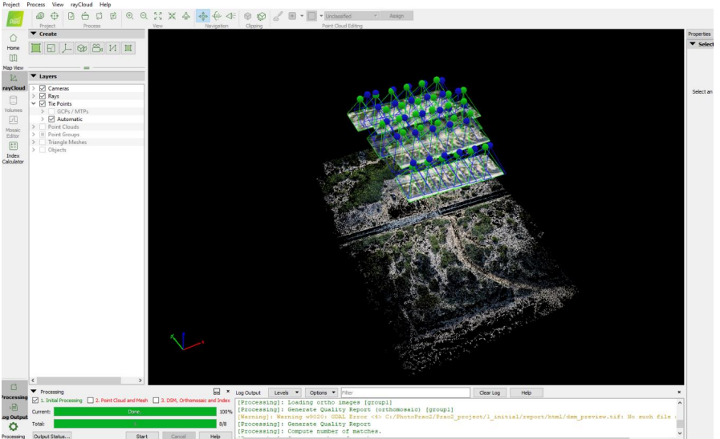
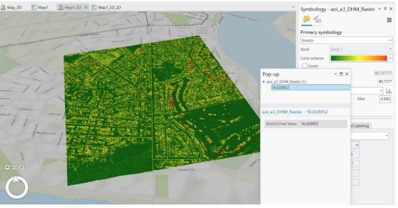
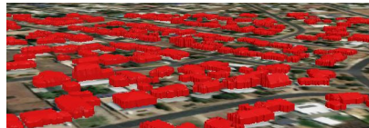
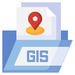
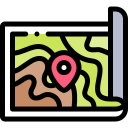

Geoportfolio
Congwei Luo
About
This website is the geoportfolio of Congwei Luo who was made for the subject Professional Practice. The website entails
information that is academically and profesionally related to the field of surveying.
A brief introduction about myself is that I am born and raised in Shanghai, China on 19 of January 1997, I am in my fourth and final year of the
Bachelor of Science (Surveying) (Honours) course. My surveying-related interests is working with creat maps in ArcGIS Pro , collection and analysis of
the output of Trimble Business center, and creating 3D generations of models using spatial data. My favourite surveying sujects are cartography,
Advanced Imaging Technology and Earth Observation Sciecne. They all belong to courses of geospatial and involve plenty of geospatial knowledge.
My own personal hobbies include swimming and travelling! More detailed information can be found in the About page!
Academic Portfolio Overview
Cartography
Cartography is the art and science of representing geographical areas graphically, usually on a flat surface such as a map or chart. The Cartography
design is the process of making a map's appearance, applying design principles and knowledge of map usage to create maps that are both aesthetically appealing and functional.
It includes scale, projection, spatial relationship, generalization, and symbolization and data modeling. Map production involves the application of elements of science and art,
combining graphic talent and expertise in editing and design principles with available technologies for product generation.I learned professional map making skills that will allow
me to design convincing maps from a range of spatial data from this course.
- Practical 2: Map directed at a target audience of choice using provided data of Melbourne City: Assessment 2.2:Mapping for specific User Group
- Practical 3: Thematic mapping of a demographic's population using data from the Australian Bureau of Statistics (ABS):Assessment2.3:Thematic Mapping
- Final Cartography Map: Free-choice on topic: Assessment3: Final Map Design
Note: If map display is too small, right-click the image and 'Open in new tab' to allow zooming of the map.
Vietnamese population in Melbourne

Advanced Imaging Technology (AIT)
Advanced Imaging Technology (AIT) sets on the core concepts of remote sensing and photogrammetry and allows you to explore more advanced
topics in the field. I studied the principles and techniques for extracting measurements of physical features and
other useful information from imagery data. I learned methods of work with different types of imagery data collected by diverse imagery sensors and
extract semantic information as well as spatial information.
The subject taught
skills from three different Softwares:
- AgiSoft Metashape
- Pix4D Mapper
- ArcGIS Pro
For the 2023 version of the course which I completed, the assignments of this was about the concepts of photogrammetry and Lidar.
It improve my level of operate softwares and ability of collbrated.
It consists of 4 Assignemnts cover cotents of photogrammentry and Lidar:
- Aerial Triangulation using Pix4D
- Produce a dense point cloud model using
Structure from Motion (SfM)
- Point cloud exploration and basic analytics
- Extracting 3D building models from point cloud
In the practical of Aerial Triangulation, I created a terrain model and orthomosaic of a small area, after performing an
SfM bundle adjustment of a block of photographs. The practical session was designed so that I can work from home if they need to and
complete the session on my own computer.
In the practical of create dense point cloud model, I used close-range photogrammetry to build a model of the entrance to the Old Melbourne Gaol.
I will capture my own images and processing them using Metashape, an SfM package used in the industry. the session will start outside at the entrance
to the Old Melbourne Gaol, as shown on the map below. This is on Victoria Street, just near the Coffee Nomad cart.
The purpose of point cloud exploration and basic analytics is to familiarize students with point cloud data. On exercising this practical,
I had basic understanding of LAS Dataset and be able to use ArcGIS pro to explore and perform some basic analytics tasks on it. I understand
convepts of DSM, DTM and different ways to visualize them.
The purpose of extract 3D building models is to use lidar point cloud data in ArcGIS Pro for a real-world application, extracting the 3D
representation of buildings. I completed based on what you have already learned in the practical exercise and some more features in ArcGIS
Pro which are introduced in this assignment. I learned methods of extract the realistic 3D representation of building footprints from the
LiDAR point cloud dataset.
Note: If map display is too small, right-click the image and 'Open in new tab' to allow zooming of the map.
Aerial Triangulation using Pix4D

Produce a dense point cloud model using structure from Motion (SfM)

Point cloud exploration and basic analytics
div>

Extracting 3D building models from point cloud

Earth observation science
This page will briefly cover all my study experience (as of 2020) within the Earth observstion science course.
This course introduced the basic principles of Earth Observation Science to me. The course includes the development of
the technologies and covers fundamental concepts of Earth Observation. This course incorporated the theory and practices
of using remotely sensed data for Earth Observation. I learned about the basic principles of Earth Observation, image enhancement
and interpretation, satellite systems, classifications, and active remote sensing. I also developed a solid foundation in the theory
and practical skills for Earth Observation through remotely sensed data. This course required students to adopt advance softwares
(Erdas ER Mapper,Trimble Business Center).
Note: photogrammentry: 1. Mission Planning and Image Measurement 2.3D Measurements and Drone Mapping /
remote sensing: 3 practicals
Mission Planning and Image Measurement

Mission Planning and Image Measurement
July 2020 - Octomber 2020
This practical exercise provided experience with some basic exercises in mission planning and image measurement, and is designed to support
and reinforce the material covered in lectures. The mission planning exercise is based on photography from an unmanned aircraft system (UAS),
also known as a UAV, RPAS or drone. The image precision test is based on scanned aerial photography.
This pracical had 2 parts of exercise. The first part is based on ArduPilot Mission Planner and I learned how to use this software to
create a mission plan that is an integral task in the use of UAS to capture spatial data. The second part is based on Erdas
ER Mapper and I investigated the factors that affect the precision of image measurements.
3D Measurements and Drone Mapping

3D Measurements and Drone Mapping
July 2020 - Octomber 2020
This practical provided experience with some basic exercises in drone mapping and 3D measurement, and is designed to support and
reinforce the material covered in lectures. The first exercise involved exploration and measurement in a 3D city model.
The second exercise generates a 3D model based on photography from an unmanned aircraft system (UAS), also known as a UAV, RPAS or drone.
I adopteded Trimble business center (TBC) to solved requirements of 3D mapping. The practical exercise makes use of
Trimble Business Centre and a 3D city model. Trimble Business Centre must be downloaded
and installed on a Windows PC. Thus I downloaded some project data for Trimble
Business Centre.
Skills and Proficiencies
|  |
GIS |
|
Word document |
|  |
Cartographic Principles |
 |
Adobe PDF |
 |
Remote Sensing |
|
Photogrammetry and Drone Mapping |
 |
Web Design: HTML & CSS |
|
Pix4D |
 |
Python Programming |
|
Trimble Business Center |
Credits and Attributions
The following programming languages and software were used to create the website
- HTML
- CSS
- JavaScript
- Visual Studio Basic
The deliverables contains content from the following subjects:
- Cartography 2 (GEOM2079)
- Advanced Imaging Technology (GEOM2086)
- Earth Observation Science (GEOM2984)
Special thanks to the following people who have helped me make this website with their expertise and guidance:
As per the policy of using the Flaticons with a free account, the attributions and crediting of the creators of the icons are as below:
Attributions of icons used: